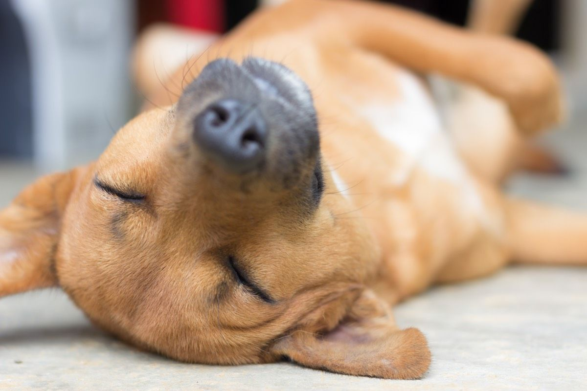
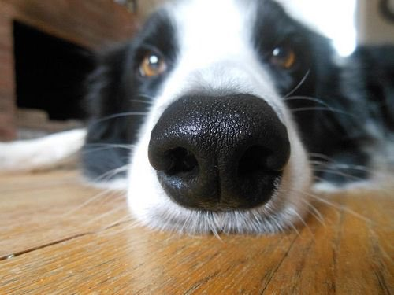
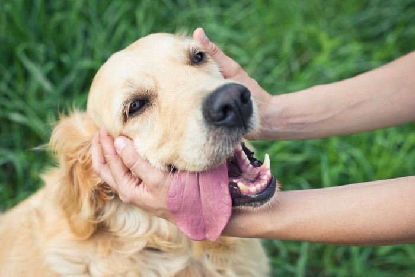
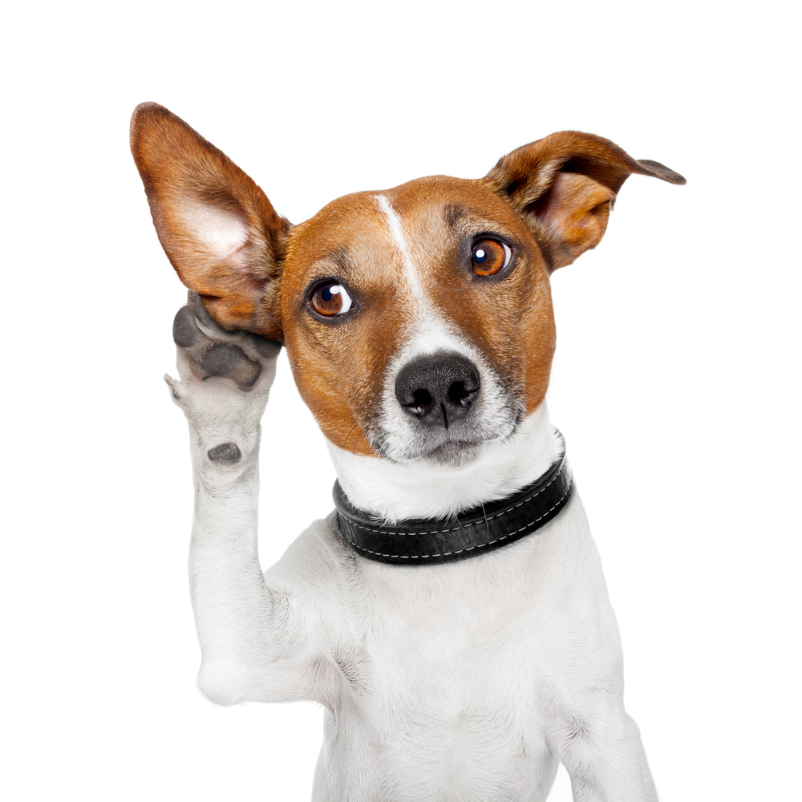
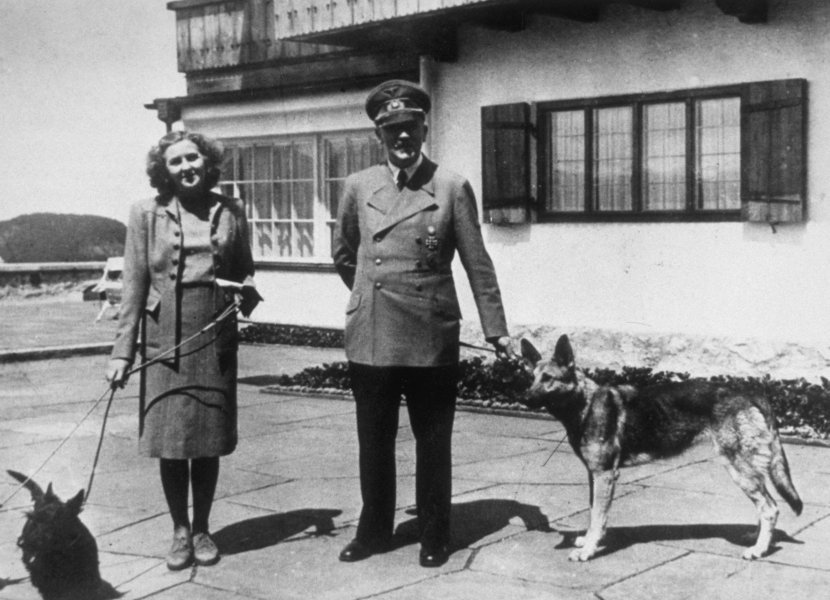
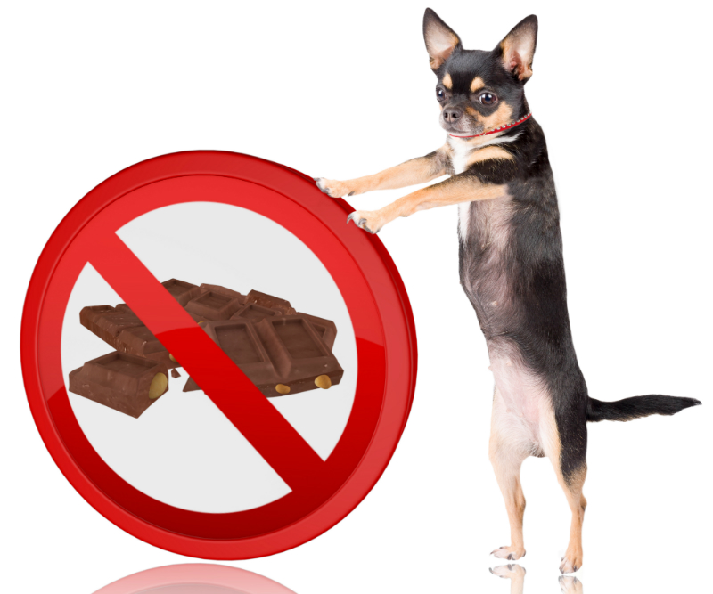

Zanimljivosti o psima
Pas za vas
Jelena Savić

Naučnici su došli da zaključka da psi sanjaju isto kao i ljudi. Aktivnost njihovog mozga je slična kao kod ljudi, a manje rase pasa sanjaju više od većih.
Pretpostavlja se da tokom sna oživljaju poznate aktivnosti kao što je igra.
- Ne znaju sve pasmine da plivaju, a baseti su jedna od njih.
- Psi imaju tri kapka – gornji, donji i treći, koji održava oči vlažnim.
- Govori se da psi zaista mogu da predvide loše vreme i bolest njihovog vlasnika.
 Pas ima jedinstveni otisak na njušci, baš poput ljudskog otiska prsta.
Pseća njuška ima tanak sloj sluzi koja mu pomaže u prepoznavanju mirisa.
Što ima šire nozdrve, ima efikasniji unutrašnji sistem hlađenja.
- Imaju prosečnu inteligenciju kao dvogodišnje dete – mogu da nauče i savladaju oko 250 reči.
- Pseće srce kuca dvaput brže od prosečnog ljudskog srca.
- Psi su pripitomljeni pre 12.000 godina.
 Pseći mozak ispušta oksitocin, hormon ljubavi, kada se njihov vlasnik igra s njima.
Psi nisu ceo naš svet, ali čine da naš svet bude ceo!
Ako mislite da psi ne umeju da broje, stavite tri pseća keksa u džep a zatim svom psu dajte dva.
- Pseće oči prevučene su posebnom membranom koja im pomaže da vide po mraku.
- Ako se vaš pas trza u snu, to znači da sanja.
- Psi piju vodu tako što vrh svog jezika saviju u obliku šolje. Naime, oni savijaju svoj jezik unazad i na taj način zahvataju vodu.
 Njihovim pokretima ušiju upravlja više od 10 različitih mišića.
Samo psi i ljudi imaju prostatu. Ali psi nemaju slepo crevo.
Psi se mogu istrenirati da predosete epileptične napade.
Znojne žlezde pasa se nalaze jedino između njihovih jastučića na šapama.
 Nacisti su tokom Drugog svetskog rata pokušali da nauče pse da govore i čitaju. Hitler, poznati ljubitelj pasa, nadao se da će životinje naučiti da komuniciraju
sa svojim SS gospodarima i podržao otvaranje specijalnih škola za pse gde bi učili da govore. Nacistički zvaničnici regrutovali su obrazovane pse iz svih krajeva Nemačke i obučavali ih da iskucaju signale svojim šapama.
- Najmanji pas na svetu je čivava Brendi koja je dugačka svega 15,2 cm.
- Jednogodišnji pas ima fizičku spremnost 15-godišnjeg ljudskog bića.
- Istrenirani psi mogu da nanjuše rak prostate sa 98 odsto preciznosti. Nosevi pasa imaju četiri puta više ćelija za miris od ljudi, što ih čini dovoljno osetljivim da detektuju isparenja organskih jedinjenja koja tumor emituje.

Vaš pas može da se razboli, pa čak i ugine ako jede čokoladu. Veterinari kažu da je čokolada jedan od najčešćih uzroka trovanja pasa.
Teobromin i kofein u čokoladi mogu prouzrokovati ozbiljne kardiovaskularne probleme.
- Štenci se možda rađaju gluvi, ali vrlo brzo stiču sjajne sposobnosti kada je sluh u pitanju. Psi takođe čuju zvukove visoke frekvencije, i raspoznaju tonove od 67 do 45.000 herca. Ljudi čuju zvukove od 64 do 23.000 herca, a i kod ljudi i kod pasa
s godinama se smanjuje gornja granica sluha.
- Razlog zašto se psi odlično slažu sa malom decom je taj što govore istim jezikom. Ne baš bukvalno, ali razumeju približno isti broj reči i pokreta – 250!
- Pseča njuška je vlažna i zato bolje "hvata" mirisne čestice.
 Pas ima dva vazdušna puta, jedan za disanje, drugi za mirisanje. Kada pas nešto ponjuši, miris direktno ulazi u deo nosne duplje u kom se nalaze receptori za miris.
Pas ima dva vazdušna puta, jedan za disanje, drugi za mirisanje. Kada pas nešto ponjuši, miris direktno ulazi u deo nosne duplje u kom se nalaze receptori za miris.
Pas ima i do 50 puta više receptora za miris od nas.
Sve ovo omogućava psu da raspozna pojedinačne sastojke jednog složenog mirisa. Primera radi, mi osetimo miris supe, ali stručnjaci kažu da psi mogu raspoznati svaki sastojak
supe.